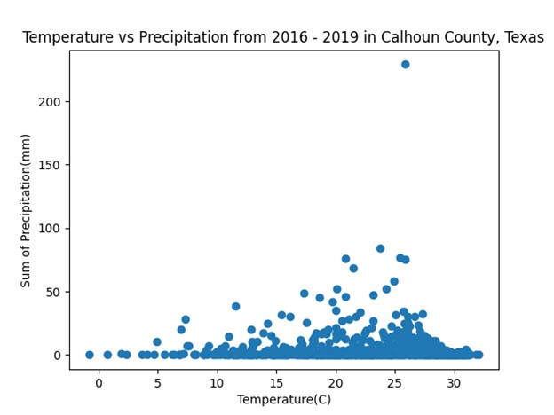
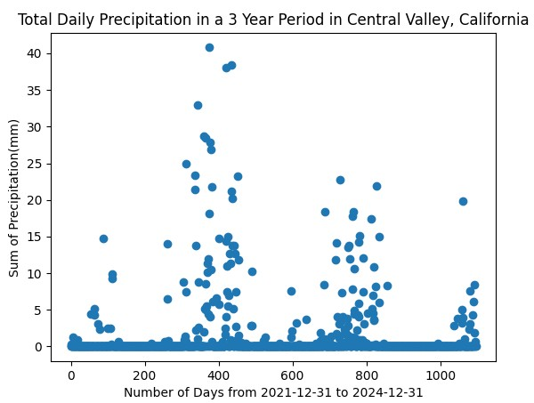
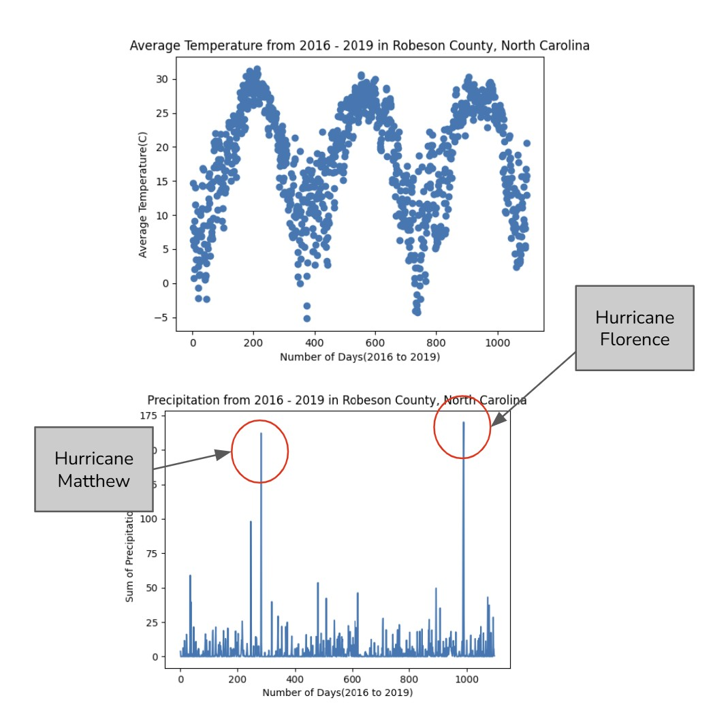

EcoGovLab Mentorship
Led technical instruction and guided project development for an environmental data visualization internship.
Overview
While mentoring an internship cohort for UCI's EcoGovLab, I guided the development of an environmental data visualization application powered by public REST APIs. Throughout the program, I taught Python, R, SQL, Matplotlib, and foundational data visualization practices.
I guided the interns through API integration, data processing, analytical problem-solving, and visualization design. I also supported code review and data validation to help the team produce accurate, research-ready visualizations that communicated environmental trends clearly.
Final code produced
The final Python application developed by one of the interns retrieves weather and pollution data from public APIs based on a user’s selected date range, location, and environmental-data preferences. It processes the results and graphs monthly or yearly averages that researchers can use for further analysis.
Open final code

